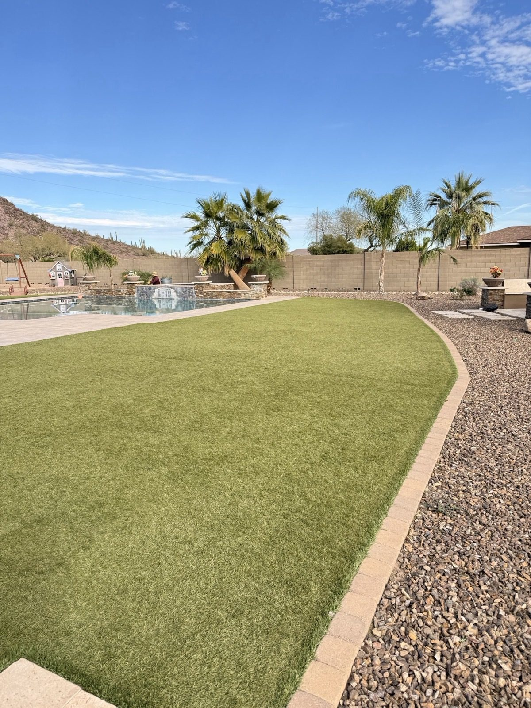

“
★★★★★
On time, very detailed, courteous and professional.
Maurice Harding


A boutique landscape studio quietly serving Scottsdale's estates, Paradise Valley compounds, and Silverleaf properties for over a decade — without ever running an ad.

Nature Formed Landscaping started as one man with a truck and a standard: every yard treated like it's our reputation. More than a decade later, we're a small, tight-knit crew based in Phoenix, caring for some of Scottsdale's most cherished properties.
We've grown through trust — never through advertising. The same clients who hired us 10 and 13 years ago are still our clients today. That's the only scorecard that matters.
From private estates in Silverleaf and Paradise Valley to family homes in Arcadia, Tempe, Gilbert, and Mesa — every project is a reflection of the standard we set on day one.
We don't cut corners. Every project is crafted with attention to detail, lasting materials, and expert craftsmanship — built to last and impress.
Reliable from the first consultation to the final trim. We follow through with clear communication and consistent results — every project, every time.
We don't just landscape, we care for spaces as if they're ours. Your yard deserves thoughtful care, balance, and beauty.
On time, very detailed, courteous and professional.
So amazing! Loved the results!
I've used the Nature Formed team for several years at my daughters' homes in Scottsdale and Phoenix. They've been professional, reliable, and incredibly knowledgeable — handling everything from irrigation repairs to plant replacements and detailed pruning.
Nature Formed installed new landscaping for me three years ago and did a beautiful job. Since then, they've become my go-to team — handling everything from regular maintenance to a full backyard remodel.
We've been customers of Nature Formed for 13 years and couldn't be happier. The crew always know exactly what needs to be done and do it exceptionally well — from regular maintenance to water line replacements, pavers, and tree trimming.
Nature Formed have been my landscapers for over 10 years and have always done a great job. They're reliable, responsive to any requests, and consistently deliver quality work.
I've used Nature Formed and the team for nearly 10 years. They've always been reliable, honest, and capable — from regular maintenance and cleanups to irrigation repairs.
Nature Formed have been my landscapers for around ten years. They do an excellent job. They are also the most reliable people that have ever worked for me.